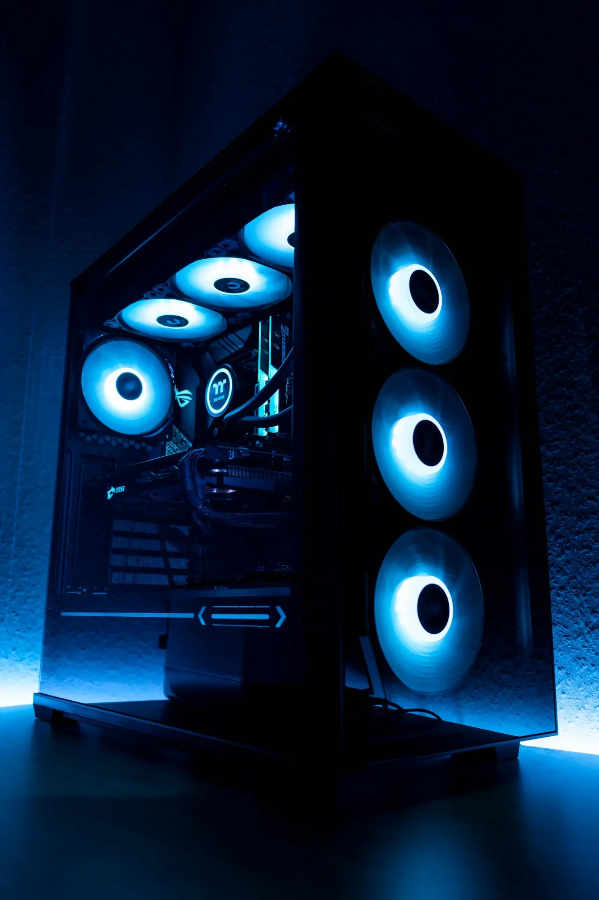
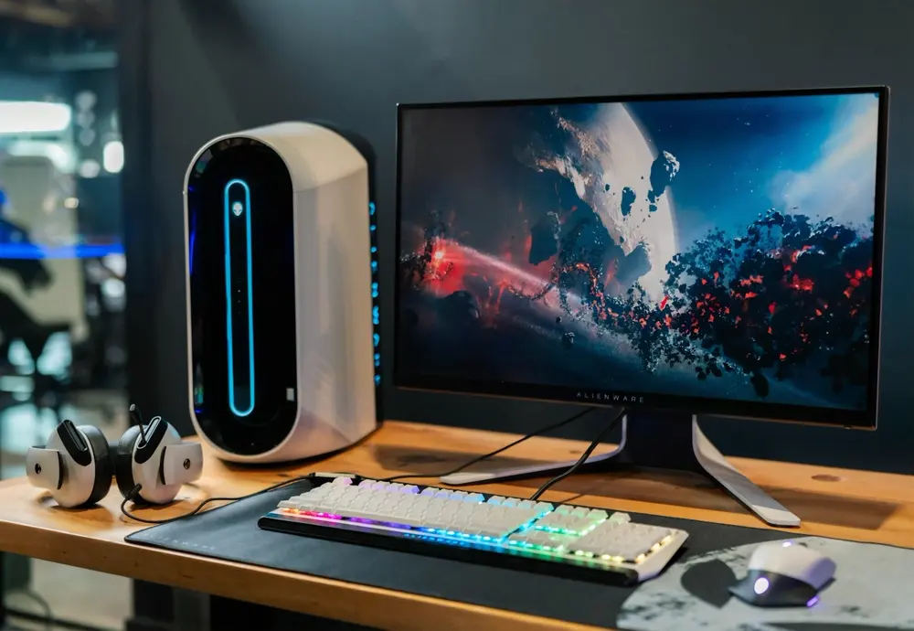

Visita técnica
Diagnóstico, manutenção e reparo de notebook e computador na sua casa ou empresa, sem você precisar levar o aparelho.

Assistência técnica em Orlândia-SP
Notebook, computador e impressora. Traga até a loja no Centro ou peça uma visita técnica na sua casa ou empresa.

Diagnóstico, manutenção e reparo de notebook e computador na sua casa ou empresa, sem você precisar levar o aparelho.
Instalação do Windows original, configuração completa do sistema e limpeza de arquivos desnecessários.
Instalação de SSD, aumento de memória RAM e troca de placa de vídeo, para trabalhar, estudar ou jogar.
A poeira causa superaquecimento e lentidão. Fazemos a limpeza interna de notebooks, computadores e impressoras.
Manutenção do equipamento e venda de suprimentos na loja.
Pergunte pelo que precisa: a disponibilidade e o preço do dia você confirma com a gente.

Teclados mecânicos, mouses, mouse pads, headsets, controles, gabinetes e water coolers.
Notebooks, tablets, teclados e mouses, mochilas e cases, fontes para notebook.
Fones sem fio, caixas de som, soundbars e smart TVs.
Power banks, adaptadores OTG, cabos USB, pilhas e baterias.
Fechaduras inteligentes, álcool isopropílico e kits de limpeza de eletrônicos.